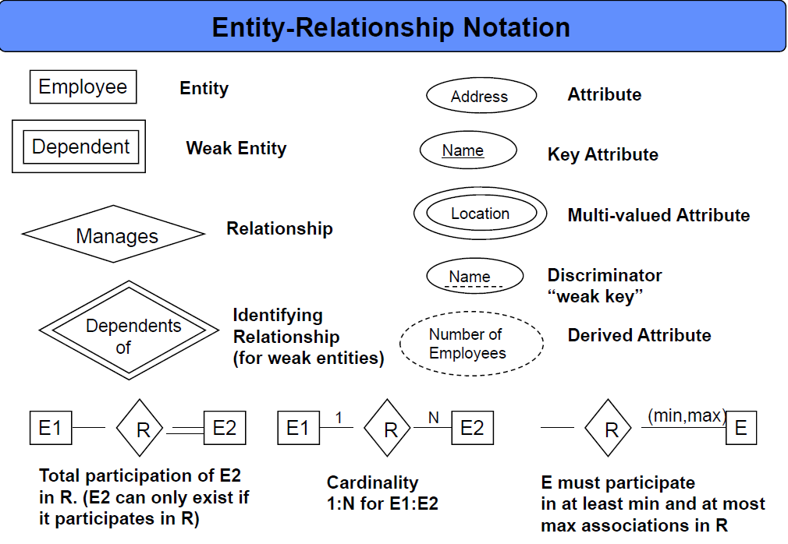
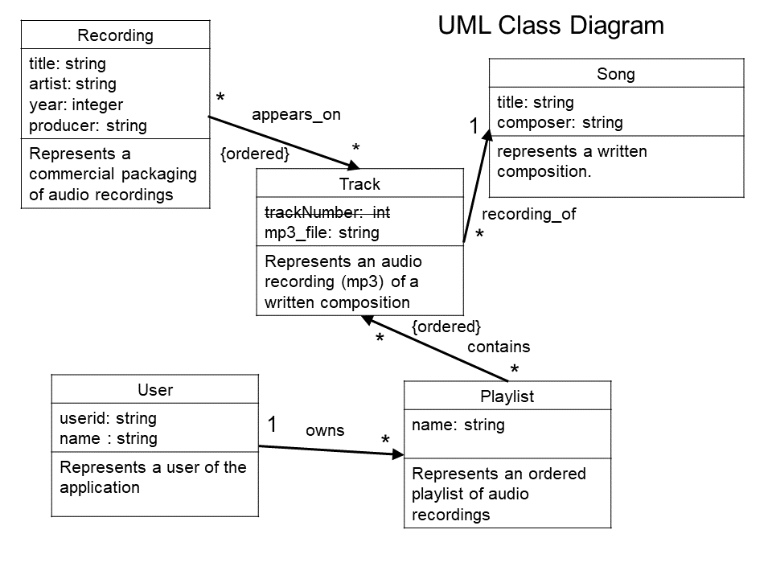
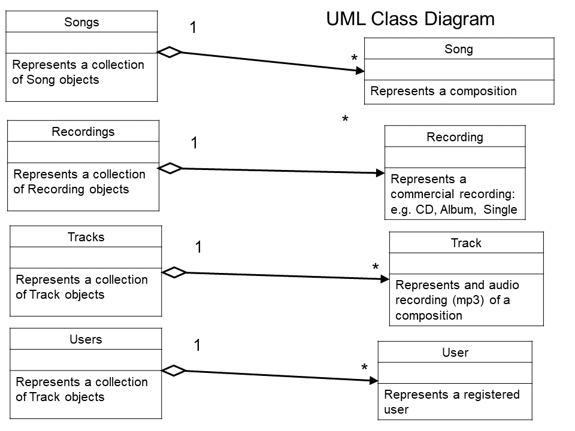

Assignment Submissions Instructions: Assignments must be submitted via culearn by the due date and time. Late assignments will not be accepted. See the Development Process Requirements below for what exactly to submit and how.
You may work on assignments in pairs if you want, in which case only one copy should be submitted with both your names on the files and in the ReadMe.txt file. If neither submits (because, for example, they thought the other one would) both get a mark of 0.
Rev 2) Assignment due date has been changed to Oct 28 by 10:00 in culearn.
Also the we are now required to support two versions of the delete command: one with the old -s flag referring to track (but listed as DEPRECATED) and a newer version that uses the -t flag (see the new help Rev2.txt file).
Rev 1) With the refactoring of the data model where playlist's now refer to tracks rather than songs (based on ttile and composer) some of the references to song_id should be changed to track_id. Specifically the following changes were made:
1) Some changes to the help.txt file describing the language now use help Rev1.txt
2) Some comments were added to insert script. Now use insert_beatles_tracks_rev2.txt
3) Clarifications to FR2.12 and 2.14
All assignments in this course will be based on itemized and categorized requirements. There will be four categories of requirements: Process Requirements, Functional Requirements, System Requirements, and Domain Requirements.
Process requirements (aka Software Engineering Requirements, Development Process Requirements, Good Practice Requirements) are requirements imposed by the software development process that is being followed by the developers. Here they include the requirements on how to submit your assignments successfully and have them marked. They do not have anything to do with the specific application being developed but rather pertain to the development process that is being used. They include the requirements that reflect how your assignment will be tested and marked. In assignments you will not get marks for meeting process requirements, instead you lose marks if they are not met -in some cases ALL of your marks.
Functional, System, and Domain requirements all pertain to the actual application being developed. Collectively these are referred to as the Design Requirements. In assignments you will get marks for those design requirements that are met. So the number of these requirements determine what the assignment will be marked out of.
Functional Requirements (aka User Requirements) pertain to what the user wants to do with the app and how it is to be operated. If a functional requirement is not met one would expect a user or client to notice that. The wording of functional requirements should make sense to the intended user or client. They should not contain references to "objects" in the object-oriented programming sense.
System Requirements (aka Constraints) are requirements imposed on the developer to make the development profitable (or evolvable, or resuable, ...). If a system requirement is not met the user, or client, of the app would likely not be aware of that. For example, the user of your app is not aware of whether you used objects to implement it or not. System requirements can make reference to "objects" in the object-oriented programming sense because the developers understand that.
Domain Requirements (aka Legal Requirements) are requirements imposed by the domain, or demographic, in which your app is intended to operate. For example, if you are making a PG13 movie about object-oriented development then the requirements that must be met for a movie to be considered PG13 are domain requirements. (Treating people as objects might be considered inappropriate for a young audience; treating objects as people will likey garner an R-rating.)
It will be an ongoing challenge in the course to fit requirements into one of the four categories or determine if there is an important missing category. In real life there are often many more requirement catagories.
Marking: This assignment is based on 29 design requirements numbered DR1.1...FR1.15 for a total of 58 marks.
Marks are awarded, or deducted, based on formalized requirements as follows:
| Req Type | Assignment Grading |
|---|---|
| R0.x | Critical Submission and Intent Requirements (Process Requirements). Assignment gets 0 if any critical submission |
| R0.x | Good Practice Requirements (Process Requirements). You lose 2 marks for each good practice |
| Rx.x | Design Requirements. You earn 2 marks for each design requirement (green) satisfied and well implemented; 1 mark if it's partly met or met but not well implemented; and 0 if it's not met or attempted. |
| Rx.x | Out of Scope Requirements. Requirements that are not coloured pertain to the project as a whole be are not being evaluted in this scope (assignment). |
The following requirements will pertain to all your assignments regardless of what your application is supposed to do (i.e. regardless of the design requirements). These requirements are intended to ensure that your code is readable and maintainable by other programmers (or markable by TA's in our case), robust (it does not crash from bad pointer references or memory allocation problems), and follows good object-oriented programming practice. You will lose 2 marks from your total assignment mark for each of the following requirements that is not satisfied. However if you do not satisfy requirement PR0.1, PR0.2 or PR0.3 you will get zero for the assignment mark.
PR0.1 [Assignment mark = 0 if not met] UNIQUENESS REQUIREMENT. The solution and code you submit MUST be unique. That is, it cannot be a copy of, or be too similar to, someone else's assignment, or code found elsewhere. A mark of 0 will be assigned to any assignment that is judged by the instructors or the TA's not to be unique.
You are, however, free to use any code posted on our course web (e.g. notes, sample code, tutorial demo code and answers) as part of you assignment solutions.
PR0.2 [Assignment mark = 0 if not met] CODE SUBMISSION REQUIRMENTS: For the purposes of assignments your code and supporting documents must be submitted to culearn and comply with the following.
1) You should submit C++ source code file and any supporting script files, documentation files required and, when appropriate the associated make file to assist the compilation. Your name and student number should be at the top of each file. There should always be a ReadMe.txt file with your assignment. If you are working with a partner, both names and student numbers must appear on the files and only submit one copy of the assignment to culearn.
2) COMPRESSION If your assignment files are compressed we will accept only .tar, .tar.gz, or .zip format compatible with one of the following three linux commands for extraction:
tar -xvf filename.tar
tar -xvf filename.tar.gz
unzip filename.zip
3)ReadMe.txt: Your assignment must be accompanied by a ReadMe.txt file in which the following should appear:
-Which extraction command should be used to uncompress your assignment files.
-Which g++ compiler command should be executed to compile your code.
-Instructions on what script, or scripts to run to demonstrate your testing.
4) In general you should provide a testing script, or main program that runs appropriate test cases to demonstrate that the design requirements are being met. (Not all requirements can be demonstrated like that, but functional requirements usually can be -especially if we are building command line applications.)
PR0.3 [Assignment mark = 0 if not met] CODE COMPILATION and TESTING:
The TA must be able to compile your code using the g++ compiler installed in our 2401-F19.ova virtual box linux image. (A current gcc installation should be compatible with that, but you should check.). The TA will run the g++ command specified in your ReadMe.txt file and when compiling is complete run your exectuable to begin verifying the assignment requirements. If your code cannot be compiled as described the assignment mark will be zero. (The TA's will not debug your code in an effort to get it to compile.)
PR0.4 CODE ORGANIZATION: Your code files should contain only one .cpp file containing the substring "main" in the title and that file should have the int main() entry point function for your code. Your object-oriented classes should each be represented in two files classname.h and classname.cpp. The .h header files should contain only type declarations and not executable code (method bodies).
PR0.5 VARIABLE AND FUNCTION NAMES: All of your variables, methods and classes should have meaningful names that reflect their purpose. Do not follow the convention in math courses where they say things like: "let x be the number of customers and let y be the number of products...". Instead call your variables numberOfCustomers or numberOfProducts. Your program should not have any variables called "x" unless there is a good reason for them to be called "x". (One exception: it's OK to call simple for-loop counters i,j and k etc. when the context is clear and VERY localized.)
PR0.6 MEANINGFUL CONSTANT NAMES: Constant values should have meaningful names and not just be represented as numbers or strings in expressions. For example don't say:
cin.getline(input, 80);
rather say:
cin.getline(input, MAX_INPUT_LENGTH);
PR0.7 VARIABLES: All instance variables in your classes should be private, unless a specific design requirements asks for them to be public (which is unlikely). It is good programming practice to design objects that provide services to others through their public methods. How they store their variables is their own private business. C or C++ unbounded arrays should not be used as public data structures. They should be encapsulated in a class which takes care of their length or number of elements. Also methods used soley by a class for its own housekeeping, and which are not considered part of the public inteface, should be in the private section of a class.
Your code should not be coupled through global variables. That is, objects should not communicate through the existance of global variables. Instead pass appropriate objects through constructor parameters.
PR0.8 ROBUSTNESS REQUIREMENTS: Your program should not crash when the TA is marking it because of a bad pointer dereferences, out of bounds error memory access, or memory leaks or double deletions. We get especially annoyed by out of bounds "off by one" errors! Your code should not have any memory leaks or double deletions. Moreover the heap memory should be empty when your procedure main() returns. That is, all heap objects should be properly deleted before the program exits.
PR0.9 COMMENTING REQUIREMENTS: Comments in your code must coincide with what the code actually does. It is a common bug for people to modify code and forget to modify the comments and so you end up with comments that say one thing and code that actually does another. Don't use comments to clarify poor variable or method names -instead choose good variable names and method names that makes the code more "self-commenting".
PR0.10 OUTPUT LABELING REQUIREMENTS: Your programs output must have sufficient comments or remarks so that the output can understood. Don't have your program just write out a bunch of integers with no indication of what they mean or what the test they supposedly demonstrate. The TA's should be able to read and understand your output WITHOUT having to look at your code to see what the output means. It is a good idea to refer specifically to the numbered design requirements in your output to help indicate which requirement you are demonstrating.
VERY IMPORTANT:
Requirements tend to make sense to the person who wrote them because that person knows what they were trying to say. You don't know what they were trying to say, only what they actually did say. So you need to ask lots of questions when things are not clear. A picture is worth a thousand words and a requirement fix is worth a thousand programing fixes.
Any sample code fragments provided with assignments might have bugs (although none are put there intentionally). It is part of your job to identify errors in the code and in the requirements and seek clarification.
This development project pertains to the scenario detailed in the Background section of Assignment #1.
While the you were creating the command line interface in Assignment #1 the client developed an data model to represent the user and song data that the application is meant to manage.
The client initially provided the following ER data model. ER, or Entity-Relationship diagrams are very popular way to model information (data not objects).
Here is a legend for the ER model symbols. The main feature of ER models are entities, relationships and keys.

During the requirements negotiation it was discovered that the above data model might have an issue. Specically that the tracks relationship represents a specific recording of a song and that is most likely what a user will want on their playlist and not the published (lyric and music) version of a song. The data model was revised to have tracks be an entity rather than a relationship. Here is the revised data model agreed to by the client.

Based on the agreed upon ER model the we have come up with the following UML class diagram that we will implement in memory. Note that a UML diagram is about objects and classes whereas an ER diagram is only about information. You will however find many similarities (ER models were used as the basis for inventing the UML notation).

Also the application should manage the following in-memory collections.

The UML diagrams provides the names of the intended classes however the collections could be classes or they might be just simple containers like:
vector<Song> songs;
vector<Recording> recordings;
vector<Track> tracks;
vector<User> users;
Whether you use classes or existing containers depends on whether you need particular methods associated with the collections. Note the UML class diagrams specify some properties that the application should support however you are free to add whatever others you need. Tracks include an mp3 file name attribute since the application will eventually be used to play mp3 files however no requirements in this assignment scope makes use of it.
The UML diagrams do not currently specify methods. You will need to design the methods you feel are appropriate. Google UML class diagrams to figure out what they are about.
An independent collection of playlists is not being specified and these are intended to be a property of User objects.
All objects of type Song, Recording, Track, User or Playlist shall be heap-based (dynamic) objects and shall be represented only once in memory. All associations represented in the UML class diagram shall be implemented with references, pointers, or by placing objects in appropriate collections.
The application is required to maintain Referential Integrity at all times. Referential Integrity requires that at no time can data refer to a non existing object. For example, if a song is removed from the songs collection then no playlist or track should refer to that song since it no longer exists.
This development phase (assignment) has the following scope.
For this assignment you will implement an in-memory version of the data model specified above and then fully implement the commands prototyped in assignment #1 to have them operate on the in-memory data model. When your commands are executed the appropriate data objects of type Song, Recording, Track, User, or Playlist should be created and the appropriate relationships establised by adding the object to the proper container or establishing the reference or pointer links that are needed. The "display" commands will now need to actually show what is currently in the data model.
The application data will be initialized with the insert script provided with assignment #1 and also included with this assignment.
The following anticipated requirements are being left out of this phase (assignment): searching for songs and recordings, authentication of users. There are also no persistence requirements in this assignment. That is, your data changes, as a result of your user commands, do not have to be saved to disk for the next time the application launches.
The main C++ programming capabilities you will likely need for the assignment are:
Working with containers (e.g. vector<> or other containers you choose to use or build).
Designing appropriate methods for classes and adding needed attributes.
Working with dynamic memory using new and delete.
Implementing proper constructors, destructors and assignment operators as needed.
Overloading the << output stream operator for the data classes you create.
DR2.1 Any song, CD, or Album titles or any band names should always be displayed for the user in title case. That is, the first letter of each word should be capitalized and any title or name that starts with the word "The" should be displayed with the "The" at the end. (e.g. The Beatles should be displayed as Beatles, The). Any application commands that display such strings for the user must display them in title case.
DR1.2) Any searches for song titles or recording titles should ignore both case and punctuation. For example "take the A train" should match "Take The 'A' Train". (We are not implementing search in this assignment so this should "automatically" be satisfied.)
DR1.3) Any searches for song titles or recording titles should accept placeholder characters repesented by a "*". From example "* Ipanema" would match "The Girl From Ipanema". (We are not implementing search in this assignment so this should "automatically" be satisfied.)
SR2.1 The application should be written in C++ and have a command line interface.
SR2.2 The application code should be fully object-oriented. That is, except for the int main(){} entry point function and maybe some initialization helper functions, all funtionality should be through methods of some class (either static or instance methods).
SR2.3 The application should decouple data objects from those used to implement the user interface or application control. Specifically the objects of type Song, Recording, Track, User, or Playlist should have NO awareness of the user interface or application control objects.
SR2.4 Data objects of type Song, Recording, Track, User and Playlist should be represented as a single instance and never copied. For example, if a Track object appears on several Playlist instances, the playlists should refer to a single Track instance and not have separate copies of the Track object. Playlists, for example, could "point" to Track objects or could contain state information, like id or title, that could be used to locate the actual Track object.
SR2.5 Classes Song, Recording, Track, User, or Playlist should be implemented to represent those described in the UML data model.
SR2.6 Objects of type Song, Recording, Track, User, or Playlist should be allocated on the heap (with new) and properly deallocated (with delete) when no longer needed. There should be no memory leaks or double deletions involving your heap storage.
SR2.7 Objects of type Song, Recording, Track, User, or Playlist should each implement an overloaded << operator so they can be output to cout using cout << aSong; syntax. The output should respect the title case requirement DR2.1.
SR2.8 The application should maintain the in-memory collections for songs, recordings, tracks, and users. These could be implemented as classes specified in the UML class diagram or by using simple c++ containers, for example:
vector<Song> songs;
vector<Recordings> recordings;
vector<Tracks> tracks;
vector<User> users;
SR2.9 Playlists shall be implemented as a property of User objects and not as a separate data collection. For example User objects might maintain their own private collection vector<Playlist> property. Playlists shall not be accessible unless a user is specified.
SR2.10 All associations on the UML class diagram provided by the architects shall be implemented with pointers, references or by placing objects in an approriate container.
SR2.11 The implementation shall comply with cardinalities (multiplicities) specified in the UML class diagrams.
SR2.12 The application shall maintain referential integrity at all times. Referential integrity requires that at no time can the data refer to an object that does not exist. For example if a song is removed from the application by removing it from the Songs collection it cannot be referred to by a Playlist or Track object.
SR2.13 Referential Integrity conflicts shall be resolved using a "Delete With Extreme Prejudice" policy. This policy requires that any references to a non existing object should be deleted. For example, if a song is removed from the Songs collection then any references to it should be deleted by, for example, removing playlist items or removing Track objects from the tracks collection.
For this assignment the commands all have to work and result in the correct in-memory data. The "show" or "display" commands must show the actual data the user is requesting. Many of the requirements are repeated from assignment #1 might be slightly modified to refer to the actual data model.
The TA's will be testing your interface but will do so only after running the data insert script and the script you are required to provide (see the last requirement). Without correct execution of these scripts the requirements below will be deemed not to have been met.
FR2.1 REPL Loop: When the application launches it should present the user with a command line terminal and prompt ready to receive commands. When a command executes the results should be displayed for the user followed by another prompt and be ready to receive the next command. (like the bash terminal in linux). All the interactive dot commands described in Assignment 1 should be fully implemented and operational.
FR2.2 The application should have a .help command to show, or remind, the user what the available commands are. The .help command should provide information to the user consistent with that in the help.txt file [Rev 1 help Rev1.txt].
FR2.3 We should be able to create and initialize the in-memory data model by reading the data insert script included with this assignment. The application should not crash if dot commands (intended for the interactive command line interface) are included in a script read in with the .read command. Dot commands that appear in scripts should be ignored when the script is read.
FR2.4 The application should fully implement all the commands described in the help.txt file included with assignment 1 (and again included with this assignment). The non-dot commands should now correctly modify the contents of the in-memory data model.
FR2.5 The user should be able to verify that the data model has correctly been modified by executing one of the .show commands to display the current state of the data model.
FR2.6 The application should still support the rules about multi-word arguments, blanks, and the order of argument flags as described in requirements FR1.6, FR1.7, FR1.8 from assignment 1.
FR2.7 All the .log commands described in Assignment 1 should be implemented and be operational.
FR2.8 The application should correcty accept and parse the add commands described in the .help.txt file and these commands should correctly modify the in-memory data model. After the data model has been intialized using the data insertion scirpt the user should be able to add additional contents interactively using the add commands.
FR2.9 The application should support the comment command // described in the help.txt file and it should correctly write the comments to the log and, if saved, the log file of the session.
FR2.10 Implement the show playlists -u user_id command to display what playlists a particular user owns. Using this command the user should be able to view the current Playlist objects that a user owns.
FR2.11 Implement the show songs -u user_id -p playlist_name command to display what songs appear on a particular playlist of a particular user. Using this command the user should be able to view the current contents of a user's playlist.
FR2.12 Implement the add -l user_id playlist_name song_id track_id command should allow establishing all the relationship that a song track appears on a particular user's playlist. For example: associating tracks with particular users playlists.
FR2.13 The application should implement the delete commands to delete recordings, songs, tracks, users, playlists or songs from playlists. The application should preserve referential integrity if items are deleted. For example if a song is deleted from the application then it should also be deleted from any playlists it appears on or any tracks that refer to it etc.
FR2.14 The application should implement the -Global attribute of the delete -Global -s song_id track_id -p playlist_name -u user_name to allow the deletion of tracks from a playlist to only affect that playlist or optionally to permanently delete the track from the application altogether (including from other playlists on which might appear). The application should preserve referential integrity if items are deleted.
FR2.15 Your assignment submission should include a script that we can .read after reading the data insert script. The commands and comments in your script should illustrate the correct operation of FR2.10, FR2.11, FR2.12, FR2.13 and FR2.14. That is, make up a scenario that involves those requirements and write a script that will execute and document the scenario. The TA's might also provide scripts that they want you to run with your code.